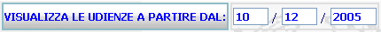

Pulsante Lista Predefinita: in corrispondenza di determinati campi relativi all'inserimento delle date, è possibile, anzichè digitare il contenuto che si vuole immettere, ricercarlo e selezionarlo da una lista di valori predefinita.Tale operazione nel caso della fissazione o prefissazione udienza è obbligatoria, in altri casi è opzionale ma è fortemente consigliata in quanto annulla la possibilità d'errore di digitazione delle date.
LE MASCHERE VIDEO
Il sistema presenta la seguente maschera:
COME FARE PER ...
| Per selezionare la data udienza interessata l'utente deve: |
- selezionare con il mouse la cartellina blu
corrispondente
N.B.: Se si desidera visualizzare le date di udienza a partire da un periodo antecedente alla data del giorno corrente, occorre
compilare il campo data

ed agire sul bottone
I CAMPI
presenti nella maschera sono da compilare solo nel caso si desidera visualizzare le udienze a partire da una data antecedente al giorno corrente.
| NOME | DESCRIZIONE |
| Data | Compilare il campo data nel formato numerico gg/mm/aa . |
PULSANTI
E' presente
il pulsante
 di stampa del contesto (videata)
di stampa del contesto (videata)
BOTTONI
Oltre ai comandi funzionali relativi al menù verticale sono presenti i seguenti comandi:
|
COMANDI |
DESCRIZIONE |
|
|
A fronte di tale comando, il sistema visualizza l'elenco delle udienze a partire dalla data specificata. |